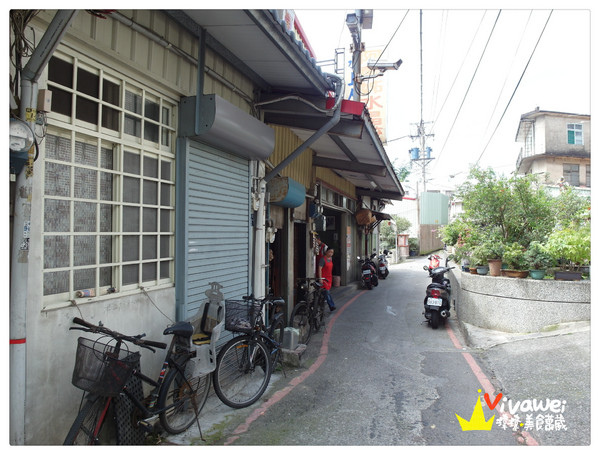
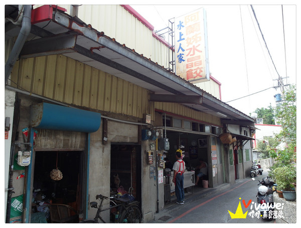
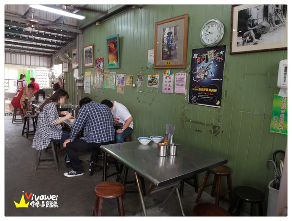

「水上人家＿阿蘭姊水晶餃」店家資訊
地址：苗栗市新苗街61巷41號
電話：037-321677
營業時間：07:00-12:10（不定休）
▲位於苗栗市三角公園這一邊的客家美食街，裡面有很多客家小吃店，
名氣最大就屬「江技舊記」
但是今天要介紹的這家是如果沒有早點起來吃就會賣完的「阿蘭姊水晶餃」！！！
▲阿蘭姊水晶餃的地點有點隱密，建議是用騎車或是步行的方式過來，
汽車應該是很難通行啦！
如果開車的朋友可以停在「８５度ｃ旁的收費停車場」然後步行過來。
85度C南苗店地址：苗栗市中正路905號，
可以導航這個地址，一旁就可以看到停車場！
▲真的就是在一個超級隱密的巷子內，路非常的窄，不太可能開車進來！
小時候也是聽別人說這家很好吃，才會知道在這麼隱密的地方有這家店！


▲終於到了阿蘭姊水晶餃，坦白說因為這裡太隱密了，
連身為在地人的我其實也很少特別進來買！
我平常都會買比較方便就能買到的「第一佳水晶餃」或是「小木屋水晶餃」吃吃！
▲這天是平日的早上九點半，結果在門口處既然也有這麼多人！！！
還真的嚇到我了～原來平日人氣也這麼旺！！！假日真的有得等了～

▲店裡面是滿滿的人潮，他們的翻桌率快，
所以不會等太久，只是很多時候會需要跟別人併桌！
▲這是店家的價目表，雖然有部分已經漲價，但是我覺得這樣的價格還是很親民啦！
▲阿蘭姊水晶餃已經是很多年的老店了，在以前是用挑著擔子在外面賣呢！很特別！
▲在桌上有擺放著兩種不同的醬料，可以在餐點送上後依自己的喜好另外添加。
▲今天點的餐是要買回家給家人吃的，就請老闆先讓我內用拍照，拍完照後再幫我外帶！
＃炒麵（小）：２０元。
▲炒麵的部分我覺得阿蘭姊的炒麵偏乾，但如果點碗湯來做搭配的話就很剛好！
＃豬血湯：２０元。
▲這份豬血湯真的是料多又划算，我個人非常推薦，
而且喝起來也不會油膩！我很喜歡
除了有大塊的豬血在裡頭外，另外還加了一些福菜，
是屬於比較有客家風味的豬血湯唷！
＃水晶餃（乾）：２５元。
▲阿蘭姊的水晶餃有賣乾的和湯的，主要就看自己想要吃什麼，
多數的人都會點湯的水晶餃來吃唷！
如果是乾的水晶餃他們只有加上簡單的油蔥，
如果想要別的醬料可以自己額外做添加！
▲但是我覺得阿蘭姊的水晶餃並沒有讓我驚豔的感覺，
不過水晶餃這個東西好像只有在客家庄才有販售！
所以水晶餃可以說是來到苗栗必吃的啦！
▲阿蘭姊的水晶餃是屬於肉餡剛好，但是比較皮薄的那種，
我個人會覺得Ｑ度和厚度不太夠啦。
▲整體來說，「阿蘭姊水晶餃」在苗栗市區算是屬一屬二的早餐店，是非常多在地人的愛店！
只不過我個人不太習慣在早餐吃這樣比較油膩的食物，
想當午餐吃的話也不是不行，
只是阿蘭姐的生意非常好，很多品項很早就會賣光光，
還是要早點來報到才吃的到啊！
引用文章:瑋瑋＊美食萬歲